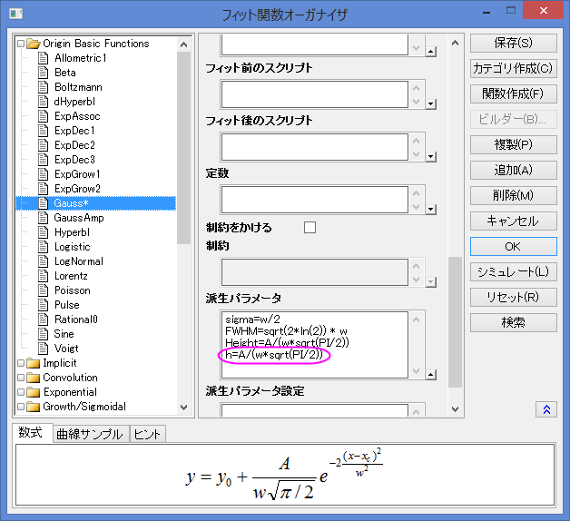

組み込み関数の派生パラメータを修正する
Fitting-AddDerivPara
概要
派生パラメータは、フィットパラメータを使って計算される追加のパラメータです。組み込み関数またはユーザ定義関数に対して自分自身の派生パラメータを定義することができます。
定義した派生パラメータはフィッティングの過程では使用されず、フィッティングセッションの最後で算出されます。
学習する項目
- フィット関数オーガナイザを使って派生パラメータを組み込みフィッティング関数に追加する
- フィット関数オーガナイザを使って、組み込み関数の派生パラメータを削除する
派生パラメータを追加する
組込のガウス関数は、次の式でピーク部分をフィットします。
^2}{w^2}}")
このとき、次式で計算できるピークの高さを調べるものとします。

- メニューからツール：フィット関数オーガナイザを選択します。ダイアログの左側パネルでOrigin Basic Funcions: Gaussを選択します。
- 派生パラメータのセクションで次の式を入力します。h=A/(w*sqrt(PI/2))

Note:
- 各派生パラメータは別々の行で定義する必要があります。
- 派生パラメータは、他の派生パラメータから計算できません。
- 保存をクリックしてからOKボタンをクリックします。
- 新しいワークブックを用意します。ヘルプ: フォルダを開く: サンプルフォルダを選択して、サンプルフォルダを開きます。このフォルダ内のCurve FittingサブフォルダにあるGaussian.dat ファイルを探します。空のワークシートにファイルをドラッグアンドドロップしてインポートします。
- A、B列を選択しメニューから解析：フィット：非線形曲線フィットを選択して、NL Fitダイアログを開き、関数ドロップダウンリストからGaussを選択します。
- コードタブを開いて左側のパネルにある派生パラメータをクリックします。派生パラメータが右側のパネルにリストされます。
- フィットボタンをクリックし、レポートシートを生成します。フィッティングののち、Originは高さを計算し、フィット結果ワークシートのパラメータ表に結果を出力します。
- 派生パラメーターの信頼区間を取得したい場合は、緑色のカギマークをクリックしてパラメータを変更を選択し、NLFitダイアログに戻ります。設定タブの詳細で、右パネルの値ブランチを広げ、フィットパラメータ欄のLCLとUCLのチェックボックスにチェックを入れます。フィットボタンをクリックして再計算します。
- 次のように、信頼区間の95% LCLと95% UCLがパラメーター、派生パラメーターの両方に対して計算されます。
派生パラメータを削除
結果シートから派生パラメータを削除することも可能です。上述のチュートリアルの操作に続けて、以下の操作を行います。
- メニューからツール：フィット関数オーガナイザを選択して再度ダイアログを開きます。ダイアログの左側パネルでOrigin Basic Functions: Gaussを選択します。
- 派生パラメータのセクションで次の式、h=A/(w*sqrt(PI/2)) を削除します。
- 保存ボタンが有効になるまで、1、2秒時間がかかります。保存ボタンをクリックしてから、OKボタンを押してダイアログを閉じます。
- 結果シートFitNL1 の左上にある緑の鍵のアイコンをクリックし、パラメータを変更を選択し、開いたNLFit (Gauss) ダイアログで、フィットボタンを再度クリックします。結果表から派生パラメータhが削除されます。